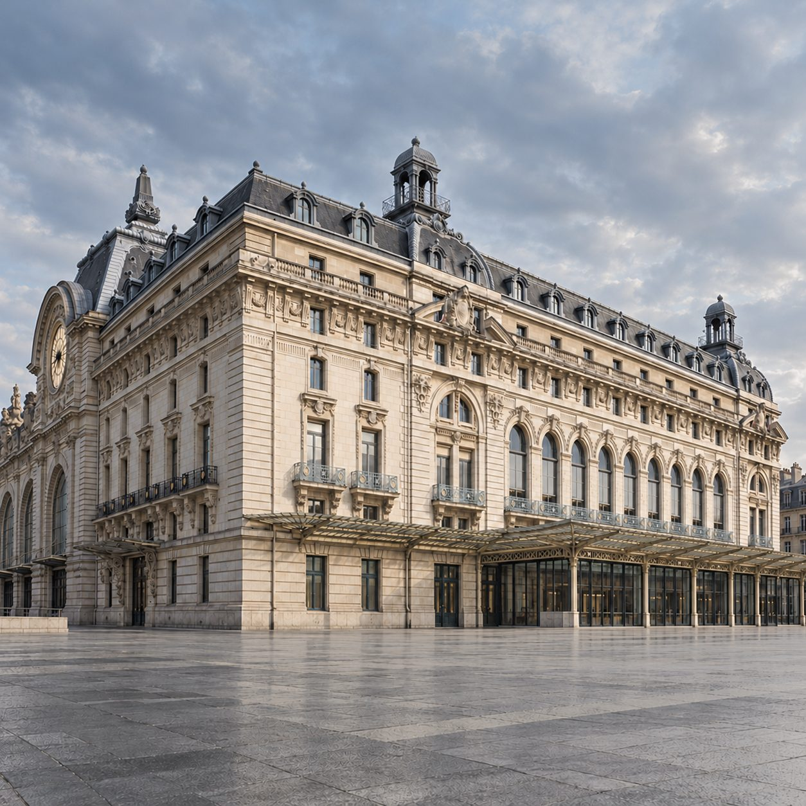
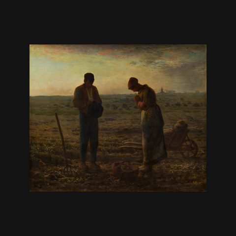
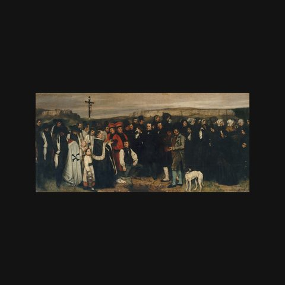
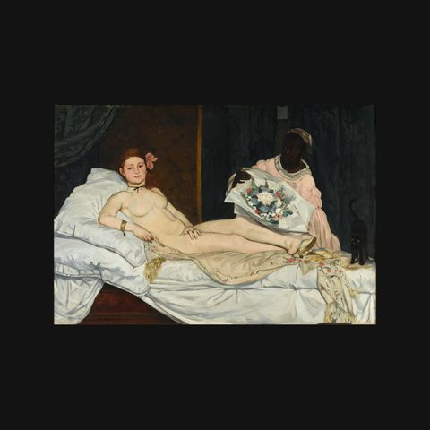
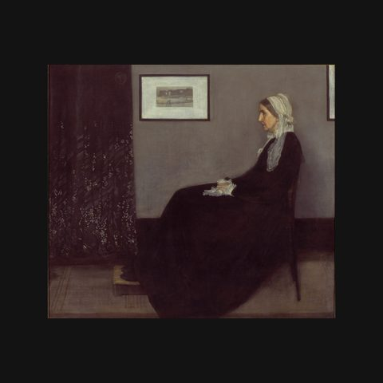
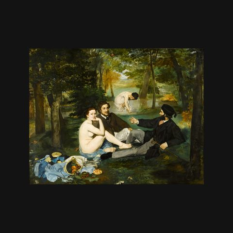
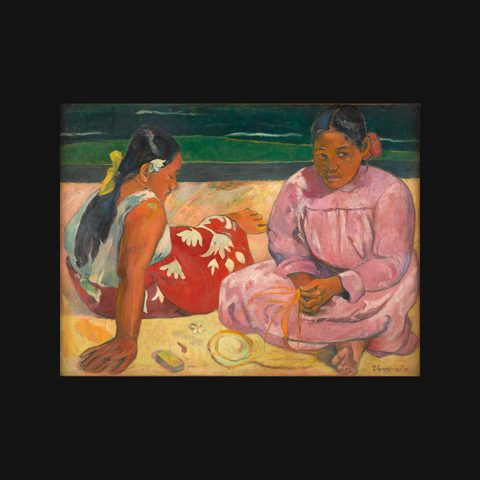

奧賽博物館廣東話語音導賞
法國 · 巴黎 · Musée d'Orsay
354 件藏品，每件都有中文講解
莫奈、雷諾阿、德加、梵高、塞尚……奧賽博物館的印象派和十九世紀藏品，由《羅納河上的星夜》到《晚鐘》，每一件都有中文導賞。
- 粵語（香港）
- 國語（台灣）
- 普通話（內地）
即將登陸 App Store
App 即將推出，敬請期待。推出後免費下載，每座博物館單獨購買，一次購買永久使用。
講解包括這些名作
 舞蹈卡爾波
舞蹈卡爾波 地獄之門羅丹
地獄之門羅丹 維納斯的誕生卡巴內爾
維納斯的誕生卡巴內爾 拾穗米勒
拾穗米勒
晚鐘米勒
奧爾南的喪禮庫爾貝
奧林匹亞馬奈
惠斯勒的母親惠斯勒
草地上的午餐馬奈 煎餅磨坊的舞會雷諾阿
煎餅磨坊的舞會雷諾阿 罌粟花田莫奈
罌粟花田莫奈 魯昂大教堂莫奈
魯昂大教堂莫奈 十四歲的小舞者德加
十四歲的小舞者德加 刨地板的工人卡耶博特
刨地板的工人卡耶博特 玩紙牌的人塞尚
玩紙牌的人塞尚 羅納河上的星夜梵高
羅納河上的星夜梵高 自畫像梵高
自畫像梵高 梵高在阿爾勒的睡房梵高
梵高在阿爾勒的睡房梵高 奧維爾教堂梵高
奧維爾教堂梵高
大溪地婦女高更……還有更多，共 354 件。
三種中文，聽你最熟悉的那一種
- 粵語（香港）地道廣東話講解，講稿亦以廣東話書寫，繁體中文。
- 國語（台灣）台灣口音講解，繁體中文講稿。
- 普通話（內地）標準普通話講解，簡體中文講稿。
參觀貼士
- 出發前在 Wi-Fi 下將奧賽博物館整館導賞下載好，館內冇訊號都用得。
- 帶備耳機，在展廳內不會打擾別人。
- 見到有興趣的作品，舉起手機對準就能識別；亦可以在作品列表按名稱搜尋。